Next: ตัวอย่าง:
Up: แบบจำลองมาร์คอฟ (ต่อ)
Previous: ตัวอย่าง:
Contents
Index
แบบจำลองความสามารถในการบำรุงรักษา
ความสามารถในการบำรุงรักษา (Maintainability) นิยามเป็นความน่าจะเป็นที่ระบบที่ล้มเหลวสามารถกลับมาทำงานได้ตามปกติในเวลาที่กำหนด ความสามารถในการบำรุงรักษา 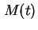 เป็นค่าความน่าจะเป็นดังกล่าวที่เวลา  หรืออีกนัยหนึ่ง เป็นความน่าจะเป็นที่ระบบจะสามารถกลับมาทำงานได้ปกติ ภายในเวลา หรือน้อยกว่า
พารามิเตอร์ที่สำคัญในการคำนวณค่าความสามารถในการบำรุงรักษา คือค่าอัตราการซ่อมบำรุง โดยที่ค่าอัตราการซ่อมบำรุง คือจำนวนที่สามารถซ่อมได้ต่อหนึ่งหน่วยเวลา หรือเวลาที่ใช้ในการซ่อมโมดูลหนึ่งชิ้น โดยที่
หรืออีกนัยหนึ่ง เป็นความน่าจะเป็นที่ระบบจะสามารถกลับมาทำงานได้ปกติ ภายในเวลา หรือน้อยกว่า
พารามิเตอร์ที่สำคัญในการคำนวณค่าความสามารถในการบำรุงรักษา คือค่าอัตราการซ่อมบำรุง โดยที่ค่าอัตราการซ่อมบำรุง คือจำนวนที่สามารถซ่อมได้ต่อหนึ่งหน่วยเวลา หรือเวลาที่ใช้ในการซ่อมโมดูลหนึ่งชิ้น โดยที่  มีค่าเท่ากับ
มีค่าเท่ากับ
 |
(13.16) |
ในอุตสาหกรรมค่า หาได้จากประสบการณ์ในการทำงาน โดยหาจากค่าเฉลี่ยของเวลาที่ใช้ในการซ่อมระบบที่เสียหายจากการใช้งาน และบันทึกเป็นค่า ค่า ที่มีค่าที่ถูกต้อง ควรจะต้องถูกบันทึกจากการเสียหายที่มีจำนวนมากพอ และเกิดจากการเสียหายที่แตกต่างกัน และได้รับการซ่อมจากพนักงานที่มีความสามารถแตกต่างกัน
การพิสูจน์หาความสามารถในการบำรุงรักษา มีแนวทางเดียวกับการพิสูจน์หาค่ากฎความน่าเชื่อถือแบบ Exponential ที่ได้แสดงมาแล้ว โดยสมมุติมีจำนวน N ระบบ และสร้างความเสียหายหนึ่งความเสียหายเข้าไป จากนั้นให้พนักงานซ่อมบำรุงเริ่มดำเนินการตามหน้าที่ เราเริ่มสร้างความเสียหายจำนวนหนึ่งที่เวลา  หลังจากเวลาผ่านไป ทำการบันทึกค่า 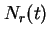 สำหรับระบบที่ได้รับการซ่อมเรียบร้อย และ 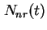 สำหรับระบบที่ยังไม่ได้รับการซ่อม เนื่องจากค่าความสามารถในการบำรุงรักษาที่เวลา เป็นความน่าจะเป็นที่ระบบจะสามารถซ่อมภายในเวลา ค่าโดยประมาณของความสามารถในการบำรุงรักษา สามารถคำนวณได้จาก
หลังจากเวลาผ่านไป ทำการบันทึกค่า 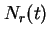 สำหรับระบบที่ได้รับการซ่อมเรียบร้อย และ 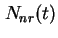 สำหรับระบบที่ยังไม่ได้รับการซ่อม เนื่องจากค่าความสามารถในการบำรุงรักษาที่เวลา เป็นความน่าจะเป็นที่ระบบจะสามารถซ่อมภายในเวลา ค่าโดยประมาณของความสามารถในการบำรุงรักษา สามารถคำนวณได้จาก
ทำการดิฟเฟอร์เรนเชียลสมการ 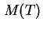 เราจะได้
ซึ่งสามารถเขียนได้เท่ากับ
ซึ่งค่าดิฟเฟอร์เรนเชียลของ คืออัตราที่ระบบถูกซ่อมที่เวลา
ที่เวลา มีระบบจำนวน ที่ยังไม่ได้รับการซ่อม ถ้าเราหาร
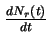 ด้วย เราจะได้
ซึ่งก็คือค่าฟังก์ชั่นการซ่อม ที่สมมุติให้เป็นค่าคงที่  มีหน่วยเป็นจำนวนการซ่อมต่อหน่วยเวลา
จากความสัมพันธ์ขั้นต้นของอัตราการซ่อม และ เราสามารถเขียนเป็น
มีหน่วยเป็นจำนวนการซ่อมต่อหน่วยเวลา
จากความสัมพันธ์ขั้นต้นของอัตราการซ่อม และ เราสามารถเขียนเป็น
ซึ่งสามารถเขียนอยูในรูปของ
จากความสัมพันธ์ 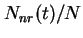 เท่ากับ 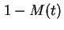 เราสามารถเขียนสมการต่อไปนี้ได้
ทำการแก้สมการดิฟเฟอร์เรนเชียลจะได้
จากสมการขั้นต้น ถ้าอัตราการซ่อมเท่ากับศูนย์ ระบบก็จะไม่มีความสามารถในการบำรุงรักษา (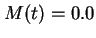) เนื่องจากไม่สามารถซ่อมระบบได้ และถ้าอัตราการซ่อมเป็นอนันต์ การซ่อมจะไม่ใช้เวลา ความสามารถในการบำรุงรักษาจะเท่ากับ 1.0 (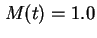) ที่เวลา 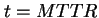 ความสามารถในการบำรุงรักษา จะมีค่าเท่ากับ
นั้นหมายถึงมีความน่าจะเป็นเท่ากับ 0.632 ที่ระบบจะสามารถซ่อมเสร็จสมบูรณ์ที่เวลา MTTR หรือน้อยกว่า
Subsections
Next: ตัวอย่าง:
Up: แบบจำลองมาร์คอฟ (ต่อ)
Previous: ตัวอย่าง:
Contents
Index
Vara Varavithya
2002-03-09